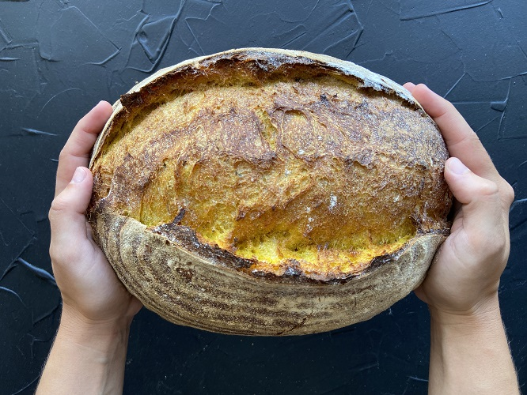

PAN DE MASA MADRE
Pane Haus es una micropanaderia que nace en el año 2020. Desde sus inicios se destaca por elaborar panes de masa madre mediante fermentacion lenta. Esto quiere decir que la fermentacion se retrasa el mayor tiempo posible, generando en el pan mucho mas sabor y a su vez el proceso de la fermentacion hace que sea mas liviano para digerir luego. Nos destacamos en hacer distintos panes de campo y de molde, aunque tambien hacemos todo tipo de masas segun estacion. Utilizamos distintos tipos de harinas artesanales y organicas, asi como tambien ingredientes que no llevan conservantes. Queremos que tu pan te llegue a la mesa lo mas fresco y sano posible. Tomamos pedidos con 48 horas de anticipacion.
